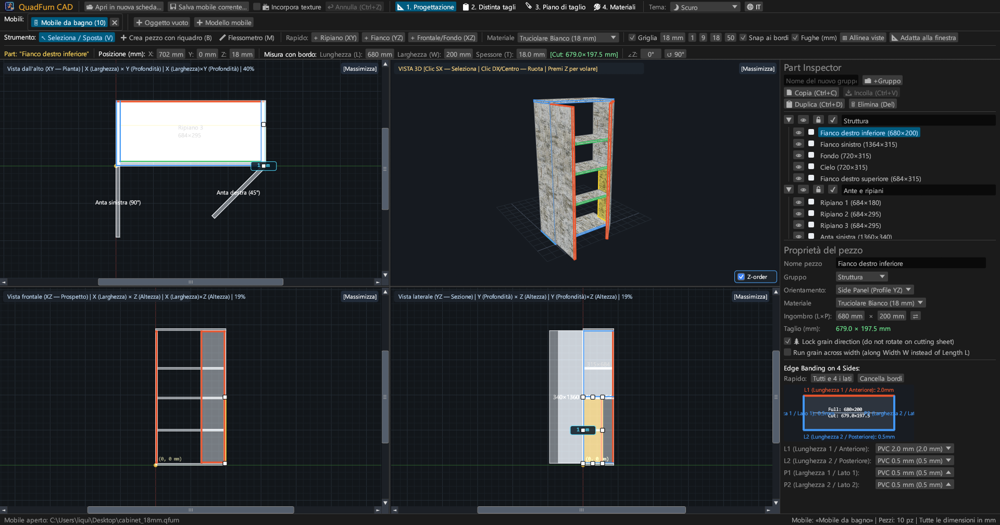
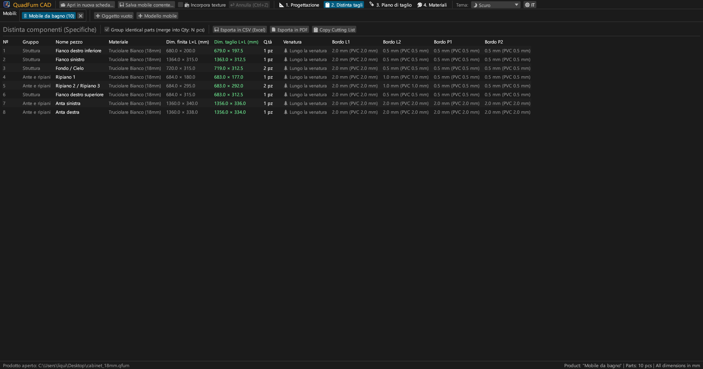
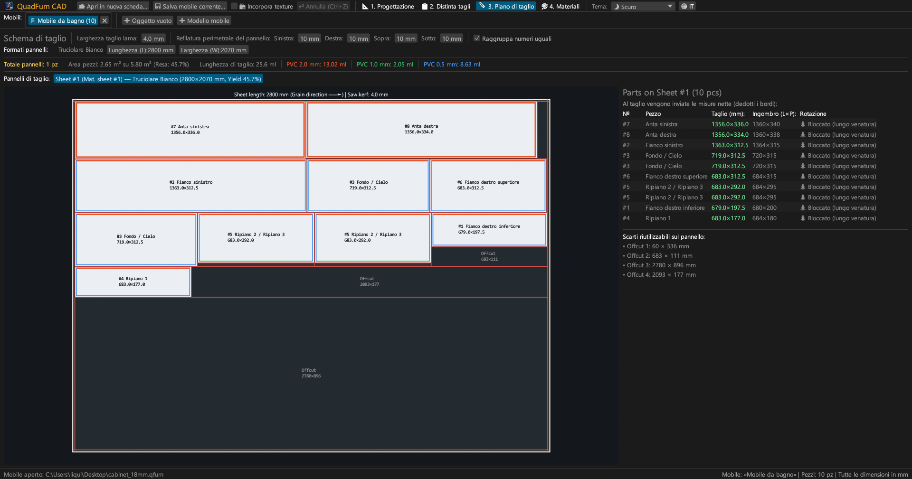
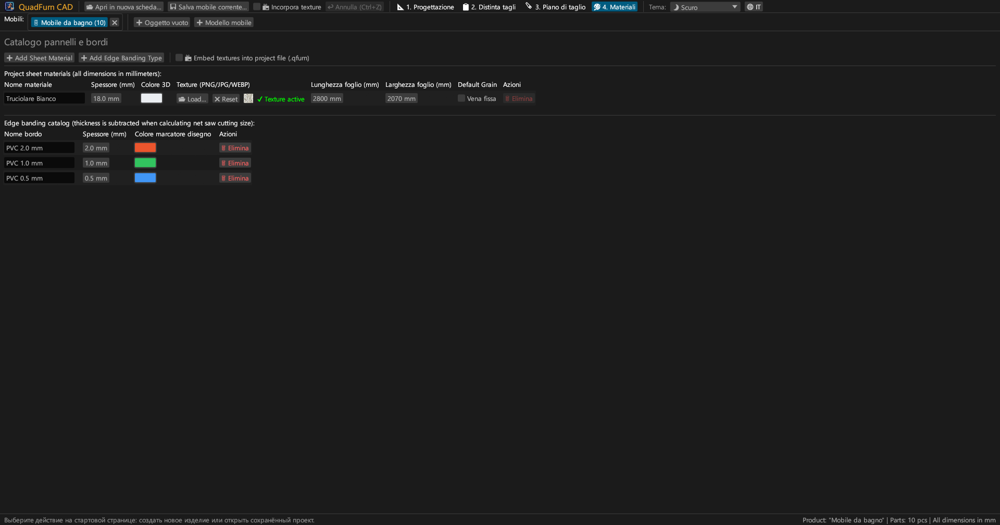
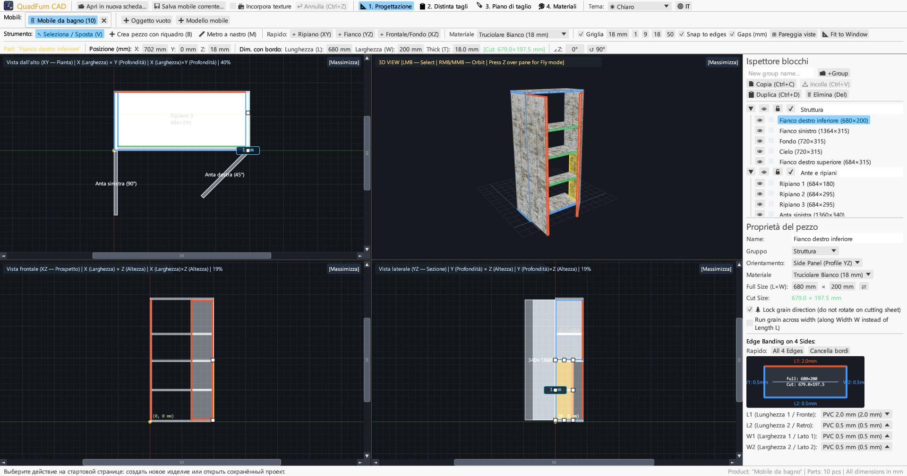
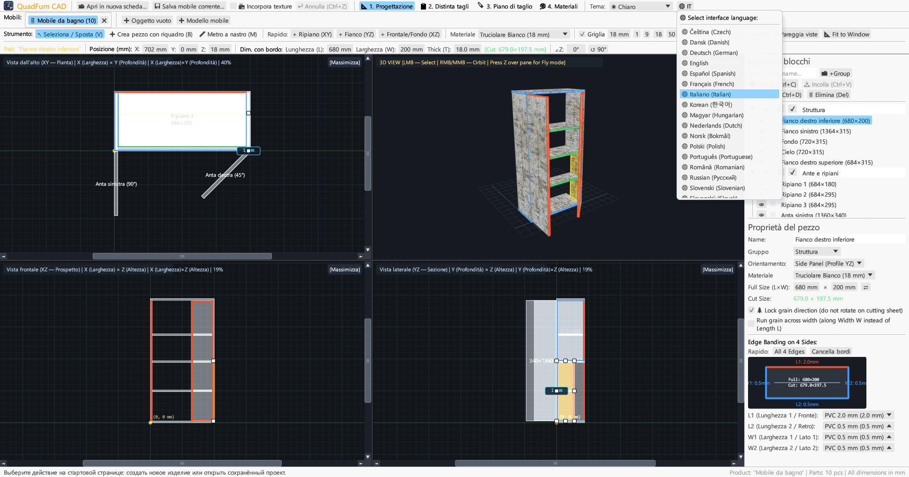

CAD per falegnami e mobilieri. Modellazione sincronizzata a 4 viste, inserimento quote con calcolatrice, detrazione automatica bordi e nesting di taglio.

Unisce disegno in 4 viste, controllo numerico diretto e ottimizzazione degli schemi di taglio.
Modifica simultanea su Pianta (XY), Prospetto (XZ), Sezione (YZ) e 3D con barre di scorrimento, snap magnetico e quote dinamiche.
Inserimento diretto di coordinate (X, Y, Z), dimensioni (L × W × T) e rotazione con calcolatrice integrata (es. 600-4 o (800-36)/2).
Assegnazione di bordi in PVC/ABS (0,4–2,0 mm) sui 4 lati per calcolare le misure nette di taglio alla sega.
Algoritmo a ghigliottina che rispetta la venatura del legno, spessore lama (4,0 mm), rifilatura perimetrale e gestione ritagli.
Lavora su più mobili contemporaneamente. Copia e incolla pezzi da una scheda all'altra con trasferimento materiali.
Esportazione in formato A4 Orizzontale: distinta elementi, viste CAD, schemi di taglio e bilancio materiali con +15% di scarto.





Binari autonomi senza dipendenze esterne.
Eseguibile portatile con icona, senza installazione.
sudo apt install ./quadfurn_0.2.2_amd64.deb
Bundle universale per Apple Silicon (M1–M4) e Intel x86_64.
| Tasto | Azione | Ambito |
|---|---|---|
| V | Strumento Selezione / Sposta (8 maniglie, selezione a finestra) | Viste 2D |
| B | Crea pezzo trascinando un rettangolo nel piano attivo | Viste 2D |
| M | Metro a nastro (misura esatta delle distanze in mm) | Viste 2D |
| Z | Volo libero in prima persona (Noclip con WASD) | Finestra 3D |
| ← → ↑ ↓ | Sposta per passo griglia (Shift per passo doppio) | Viste 2D |
| Ctrl + C / V | Copia / incolla elementi (tra schede di progetto) | Tutte le schede |
| Ctrl + D | Duplica elementi selezionati | Progetto attivo |
| Ctrl + S | Salva progetto in file .qfurn / .json | Progetto attivo |
| Ctrl + Z | Annulla ultima modifica (fino a 40 passaggi) | Progetto attivo |
| Delete / Backspace | Elimina elementi selezionati | Progetto attivo |